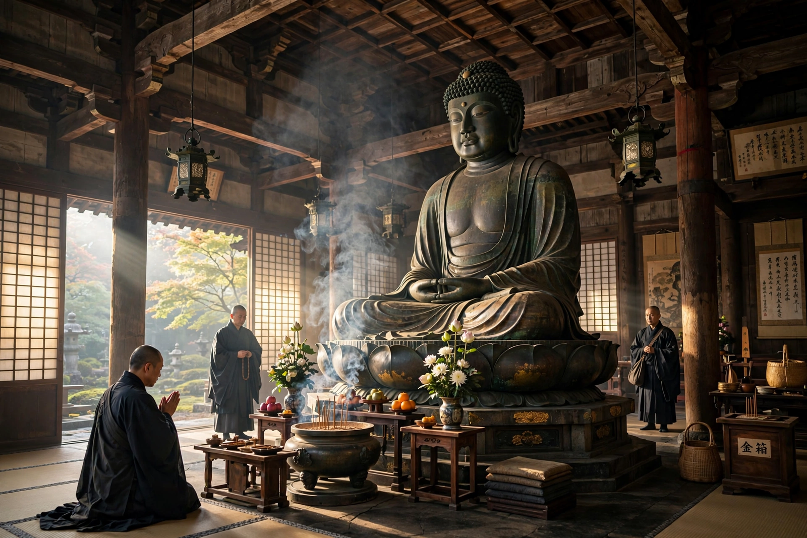

| Buddhism in Japan | |
|---|---|
| Introduced | 6th century CE, via Korea |
| Major schools | Tendai, Shingon, Pure Land, Zen, Nichiren |
| Key figures | Saichō, Kūkai, Hōnen, Shinran, Dōgen, Nichiren |
| Sacred sites | Mount Hiei, Mount Kōya, Kamakura, Kyoto |

Buddhism was first introduced to Japan in the 6th century CE, traditionally in 538 or 552, when the king of Baekje in Korea sent a mission to the Yamato court bearing an image of the Buddha and copies of sutras. Buddhism has since shaped Japanese religion, art, architecture and philosophy for nearly fifteen centuries, coexisting and often blending with the native Shinto tradition.
Under Prince Shōtoku and the Nara-period state, Buddhism became a pillar of government; Emperor Shōmu ordered the construction of provincial temples and the great Tōdai-ji in Nara, with its colossal bronze Great Buddha, dedicated in 752. In the Heian period the monks Saichō and Kūkai returned from Tang China to found the Tendai school on Mount Hiei and the esoteric Shingon school on Mount Kōya.
The Kamakura period (1185–1333) produced a flowering of new schools aimed at wider audiences: Hōnen and Shinran taught Pure Land devotion to Amida Buddha through the nembutsu; Eisai and Dōgen transmitted Zen (Rinzai and Sōtō); and Nichiren preached exclusive devotion to the Lotus Sutra.
Under the Tokugawa shogunate, Buddhist temples were incorporated into a system of household registration (the danka system) that made temples instruments of social control and suppressed Christianity. The Meiji Restoration brought a brief violent suppression of Buddhism (haibutsu kishaku), but Buddhism recovered and remains, alongside Shinto, one of Japan's two principal religious traditions, with tens of thousands of temples and a central role in funerary practice — most Japanese funerals are Buddhist.